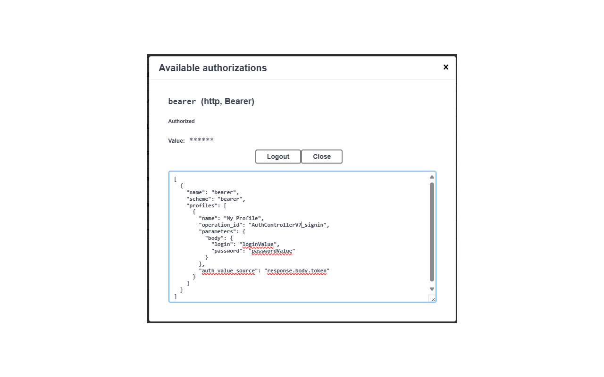
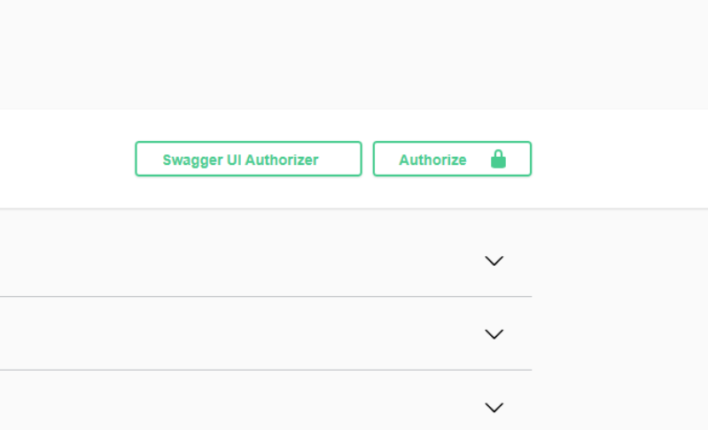
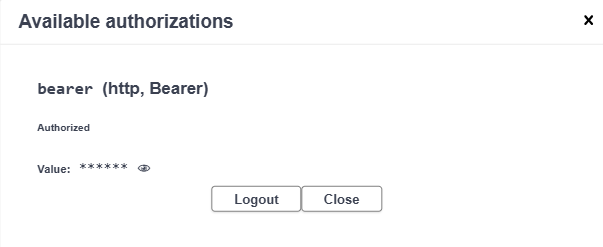

How It Works
See It in Action
Watch how Swagger UI Authorizer streamlines your API testing workflow.


Profile Management Modal
Create and manage authorization profiles directly inside Swagger UI's interface. Each security scheme gets its own block.

Flexible Profile Types
Choose between request-based (auto-fetch token), static value, or credential-based profiles for each security scheme.

One-Click Access
The "Swagger UI Authorizer" button integrates directly into the existing Swagger UI toolbar — always right where you need it.

Token Visibility
Click the 👁 icon next to any authorized scheme to instantly view the current token value for debugging purposes.